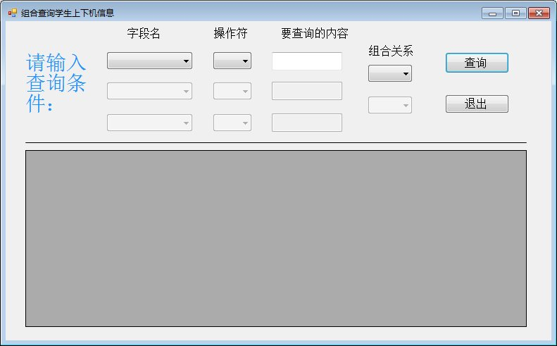

组合查询一直是我一个头疼的事情，经过我不懈努力，终于在看了多次博客找了n多资料后实现了，现在拿出来和大家共享，希望大家指正！

'/*************************************************
'作者：许恕
'小组：
'说明:转换组合查询汉字为代码的类
'创建日期：2013.3.8
'版本号：v1.0.0
'*********************************************/
Public Class CombineCheckChangeStringBLL
' /// <summary>
' /// depiction：<改方法是转换上下机字符>
' /// </summary>
' /// <param name="<strCombineString>"><上下机实体></param>
' /// <returns>
' ///<返回上下机实体>
' /// </returns>
Public Function ChangeOnlineRecordString(strCombineString As Entity.CombineSelectEntity) As Entity.CombineSelectEntity
'转换字段
strCombineString.FieldName1 = ChangeOnlineRecordFieldName(strCombineString.FieldName1)
strCombineString.FieldName2 = ChangeOnlineRecordFieldName(strCombineString.FieldName2)
strCombineString.FieldName3 = ChangeOnlineRecordFieldName(strCombineString.FieldName3)
'装换操作符
strCombineString.OperationalChar1 = ChangeOperationalChar(strCombineString.OperationalChar1)
strCombineString.OperationalChar2 = ChangeOperationalChar(strCombineString.OperationalChar2)
strCombineString.OperationalChar3 = ChangeOperationalChar(strCombineString.OperationalChar3)
'转换关系符
strCombineString.Relationchar1 = ChangeRelationchar(strCombineString.Relationchar1)
strCombineString.Relationchar2 = ChangeRelationchar(strCombineString.Relationchar2)
Return strCombineString
End Function
' /// <summary>
' /// depiction：<改方法是转换上下机字符-字段>
' /// </summary>
' /// <param name="<strOnline>"><上下机字符></param>
' /// <returns>
' ///<返回上字符串>
' /// </returns>
Public Function ChangeOnlineRecordFieldName(strOnline As String) As String
Dim strOnlineReturn As String
Select Case strOnline
Case "卡号"
strOnlineReturn = "card_id"
Case "上机日期"
strOnlineReturn = "online_date"
Case "上机时间"
strOnlineReturn = "online_time"
Case "机房号"
strOnlineReturn = "computer_no"
Case Else
strOnlineReturn = ""
End Select
Return strOnlineReturn
End Function
' /// <summary>
' /// depiction：<改方法是转换字符-操作符>
' /// </summary>
' /// <param name="<strOnline>"><上下机字符></param>
' /// <returns>
' ///<返回上字符串>
' /// </returns>
Public Function ChangeOperationalChar(strChange As String) As String
Dim strRenturn As String
Select Case strChange
Case "大于"
strRenturn = " > "
Case "小于"
strRenturn = " < "
Case "等于"
strRenturn = " = "
Case "不等于"
strRenturn = " <> "
Case Else
strRenturn = " "
End Select
Return strRenturn
End Function
' /// <summary>
' /// depiction：<改方法是转换关系字符>
' /// </summary>
' /// <param name="<strOnline>"><上下机字符></param>
' /// <returns>
' ///<返回上字符串>
' /// </returns>
Public Function ChangeRelationchar(strChange As String) As String
Dim strRenturn As String
Select Case strChange
Case "并且"
strRenturn = " and "
Case "或者"
strRenturn = " or "
Case Else
strRenturn = ""
End Select
Return strRenturn
End Function
End Class
'/*************************************************
'作者：许恕
'小组：
'说明:上机事务的类
'创建日期：2013.2.28
'版本号：v1.0.0
'*********************************************/
Public Class OnlineBLL
' /// <summary>
' /// depiction：<改方法是组合查询上机信息>
' /// </summary>
' /// <param name="<checkString>"><组合查询实体></param>
' /// <returns>
' ///<返回datatable>
' /// </returns>
Public Function CombineCheckOnlineRecord(enCheckString As Entity.CombineSelectEntity) As DataTable
'改变组合查询的字符为英文
Dim ChangeStringBLL As New CombineCheckChangeStringBLL
enCheckString = ChangeStringBLL.ChangeOnlineRecordString(enCheckString)
'查询内容
Dim RecordFactory As New Factory.RecordFactory
Dim IOnlineRecordDAL As IDAL.IOnLineRecordSeverDAL
Dim OnlineDataTable As DataTable
IOnlineRecordDAL = RecordFactory.CreatOnLineRecordSeverDAL()
OnlineDataTable = IOnlineRecordDAL.CombineCheckOnlineRecord(enCheckString)
'返回查询到的内容
Return OnlineDataTable
End Function
End ClassImports System
Imports System.Data
Imports System.Data.SqlClient
Imports System.Configuration
'/*************************************************
'作者：许恕
'小组：
'说明:组合查询字符组合成sql的类
'创建日期：2013.3.9
'版本号：v1.0.0
'*********************************************/
Public Class GroupCombineSqlStringDAL
' /// <summary>
' /// depiction：<改方法是组合上机查询语句>
' /// </summary>
' /// <param name="<enCheckString>"><组合查询字符实体></param>
' /// <returns>
' ///<返回string>
' /// </returns>
Public Shared Function GroupOnlineSqlString(enCheckString As Entity.CombineSelectEntity) As String
Dim strSQL As String
strSQL = "Select * from T_OnLineRecord where " & enCheckString.FieldName1 & enCheckString.OperationalChar1 & " @SelectString1 "
If enCheckString.Relationchar1 = "" Then
Return strSQL
End If
strSQL = strSQL & enCheckString.Relationchar1 & " " & enCheckString.FieldName2 & enCheckString.OperationalChar2 & " @SelectString2 "
If enCheckString.Relationchar2 = "" Then
Return strSQL
End If
strSQL = strSQL & enCheckString.Relationchar1 & " " & enCheckString.FieldName2 & enCheckString.OperationalChar2 & " @SelectString2 "
Return strSQL
End Function
End Class
'/*************************************************
'作者：许恕
'小组：
'说明:对用户表操作的类
'创建日期：2013.2.28 16:00
'版本号：v1.0.0
'*********************************************/
Public Class SQLSeverOnLineRecordSeverDAL : Implements IDAL.IOnLineRecordSeverDAL
' /// <summary>
' /// depiction：<改方法是组合查询记录>
' /// </summary>
' /// <param name="<enCard>"><查询实体></param>
' /// <returns>
' ///<返回datatable>
' /// </returns>
Public Function CombineCheckOnlineRecord(enCheckString As Entity.CombineSelectEntity) As DataTable Implements IDAL.IOnLineRecordSeverDAL.CombineCheckOnlineRecord
'创建sqlhelper类
Dim userSqlHelper As New SqlHelper.SQLHelper
'sql语句
Dim strSql As String
Dim OnlineDataTable As DataTable
'Sql查询语句
strSql = GroupCombineSqlStringDAL.GroupOnlineSqlString(enCheckString)
'设置参数
Dim sqlParams As SqlParameter()
If enCheckString.Relationchar1 = "" Then
sqlParams = {
New SqlParameter("@SelectString1", enCheckString.SelectString1)
}
End If
If enCheckString.Relationchar2 = "" And enCheckString.Relationchar1 <> "" Then
sqlParams = {
New SqlParameter("@SelectString1", enCheckString.SelectString1),
New SqlParameter("@SelectString2", enCheckString.SelectString2)
}
End If
If enCheckString.Relationchar2 <> "" And enCheckString.Relationchar1 <> "" Then
sqlParams = {
New SqlParameter("@SelectString1", enCheckString.SelectString1),
New SqlParameter("@SelectString2", enCheckString.SelectString2),
New SqlParameter("@SelectString3", enCheckString.SelectString3)
}
End If
'执行
OnlineDataTable = userSqlHelper.ExecuteSelect(strSql, CommandType.Text, sqlParams)
Return OnlineDataTable
End Function
End Class